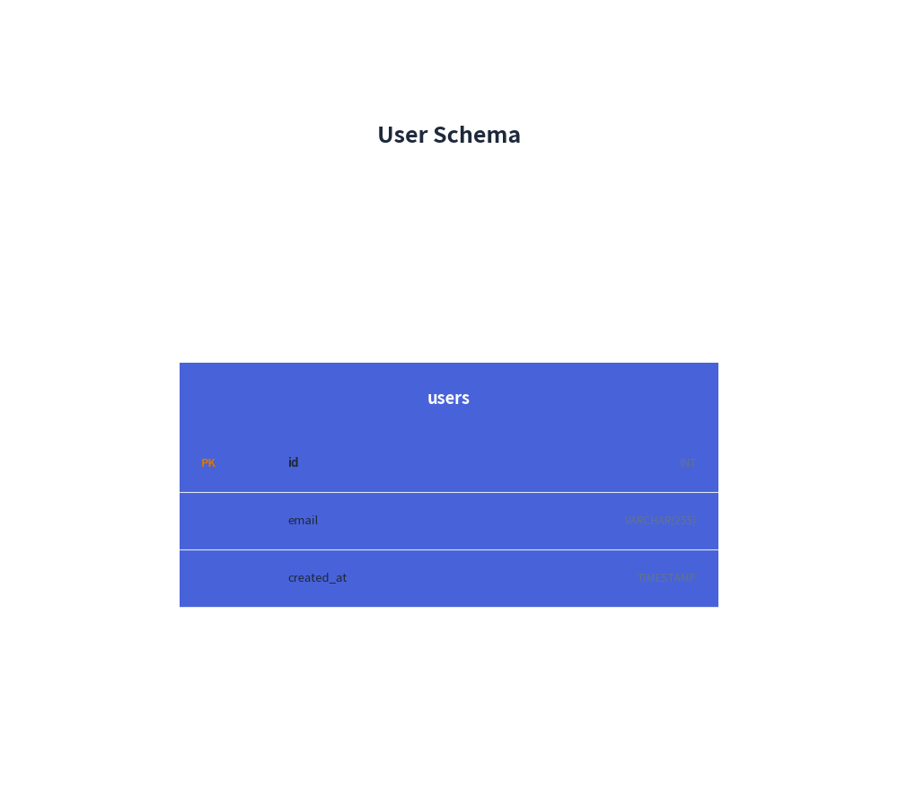
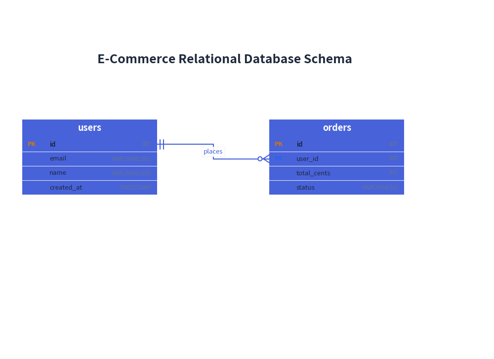

ERDiagram: Relational Schemas & Crow's Foot Notations
ERDiagram visualizes relational database architectures adhering strictly to Information Engineering (IE) / Crow's Foot notation—the industry standard for physical database schema modeling.
1. Overview & Crow's Foot Notation
users orders
┌──────────────────────┐ ┌──────────────────────┐
│ id INT [PK] │──||────o<──│ id INT [PK] │
│ email VARCHAR(255) │ │ user_id INT [FK] │
│ name VARCHAR(100) │ │ total DECIMAL(10,2) │
└──────────────────────┘ └──────────────────────┘
- Information Engineering (IE) Standard: Uses standard Crow's Foot markers (
||for exactly 1,o<for zero or more,|<for one or more,o|for zero or one). - Column-Level Anchoring: Rather than connecting to arbitrary points on the table perimeter, Drawlib allows you to anchor lines directly to the specific primary key and foreign key table rows (
start_column="id",end_column="user_id"). - Key Badges: Automatically renders
[PK]and[FK]tags next to column definitions with syntax highlighting.
2. Constructor & Entity Definition
from drawlib.canvas import save, setup
from drawlib.diagrams.er import ERDiagram, Entity
from drawlib.styles import Styles
setup(width=50, height=45)
er = ERDiagram(
node_style=Styles.PrimaryFlat,
edge_style=Styles.Primary,
title="User Schema",
)
# Create entity table
users = er.add(Entity(name="users", width=30.0), xy=(25.0, 18.0))
users.add_column("id", type="INT", pk=True)
users.add_column("email", type="VARCHAR(255)", nullable=False)
users.add_column("created_at", type="TIMESTAMP")
er.draw(xy=(0.0, 0.0))
save()

Parameter Reference
Entity Class
| Parameter | Type | Default | Description |
|---|---|---|---|
name |
str |
Required | Table name displayed in entity header band. |
width |
float |
30.0 |
Table bounding width in canvas units. |
height |
float | None |
None |
Optional height override (calculated from rows if None). |
style |
Style | None |
None |
Optional styling for table border and header. |
Column Properties (add_column)
| Parameter | Type | Default | Description |
|---|---|---|---|
name |
str |
Required | Column field name. |
type |
str |
"" |
Data type (e.g. INT, VARCHAR(255)). |
pk |
bool |
False |
When True, displays the [PK] badge. |
fk |
bool |
False |
When True, displays the [FK] badge. |
nullable |
bool |
True |
Whether field allows NULL values. |
3. Supported Cardinality Notations
| Cardinality String | Parent Marker | Child Marker | Standard Semantics |
|---|---|---|---|
"1:*" |
Exactly 1 (` | `) | |
"1:1" |
Exactly 1 (` | `) | |
"1:1..*" |
Exactly 1 (` | `) | |
"1:0..1" |
Exactly 1 (` | `) | |
"0..1:1" |
Zero or one (`o | `) | Exactly 1 (` |
"0..1:*" |
Zero or one (`o | `) | Zero or more (o<) |
"*:*" |
Zero or more (o<) |
Zero or more (o<) |
Many-to-Many |
4. E-Commerce Relational Schema with Column Anchors
The following example anchors connections directly to the exact foreign and primary key rows:

5. Best Practices & Guidelines
- Always Use Column Anchoring: Supplying
start_columnandend_columnvisually connects the specific foreign key attribute to its referenced primary key, making schemas intuitive and professional. - Width Budgeting: Tables with long data types (e.g.,
VARCHAR(255)) look best with awidthof28.0to34.0canvas units. - Cardinality Strings: Always use explicit cardinality strings (
"1:*","1:1", etc.) rather than manual arrow heads.